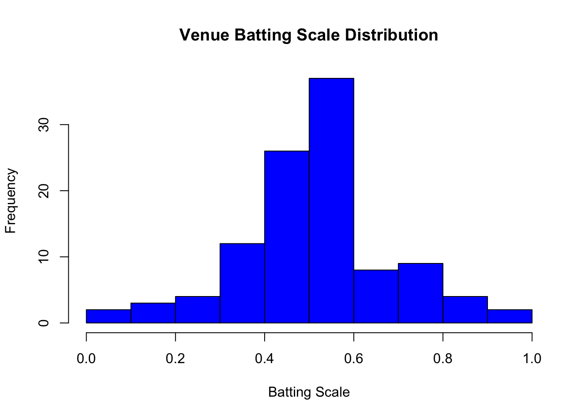
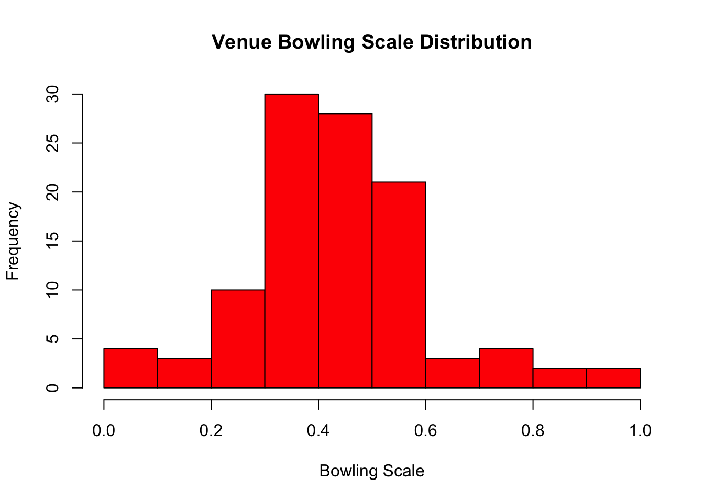
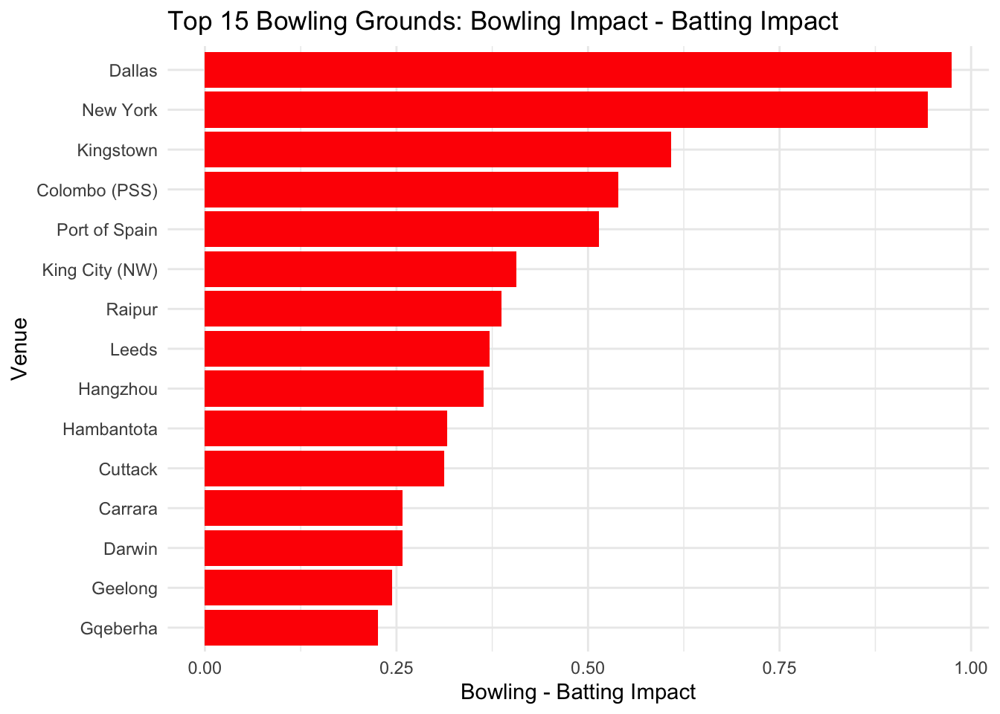
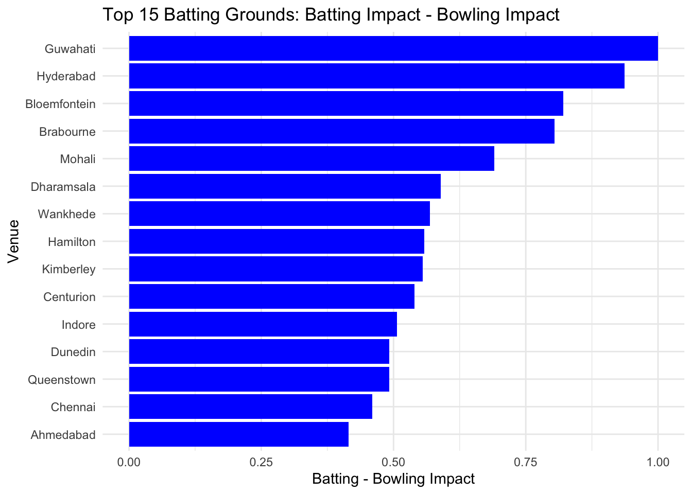
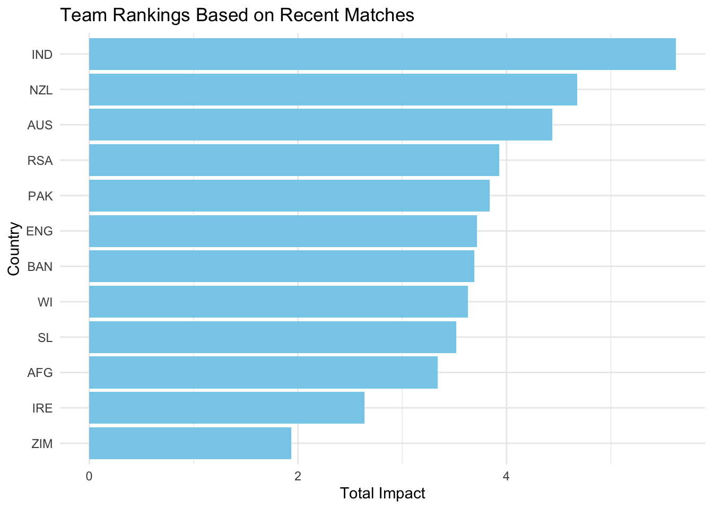

3 Venue Impact Factors and Team Rankings - Venue_Team_Rankings.R
3.1 Venue Impact
Create venue impact factors
venue_factors <- player_data %>%
group_by(Ground) %>%
summarise(
AvgBatImpact = mean(BattingImpact, na.rm = TRUE),
AvgBowlImpact = mean(BowlingImpact, na.rm = TRUE)
)Venue considerations
venue_factors <- venue_factors %>%
mutate(
#standardize
BattingScale = (AvgBatImpact - mean(venue_factors$AvgBatImpact, na.rm = TRUE)) / sd(venue_factors$AvgBatImpact, na.rm = TRUE),
BowlingScale = (AvgBowlImpact - mean(venue_factors$AvgBowlImpact, na.rm = TRUE)) / sd(venue_factors$AvgBowlImpact, na.rm = TRUE)
)
battingranking = venue_factors %>%
arrange(desc(BowlingScale - BattingScale))
bowlingranking = venue_factors %>%
arrange(BattingScale - BowlingScale)Min max scale venue factors bating scale and bowling scale
venue_factors$BattingScale2 = (venue_factors$BattingScale - min(venue_factors$BattingScale)) / (max(venue_factors$BattingScale) - min(venue_factors$BattingScale))
venue_factors$BowlingScale2 = (venue_factors$BowlingScale - min(venue_factors$BowlingScale)) / (max(venue_factors$BowlingScale) - min(venue_factors$BowlingScale))
battingranking = venue_factors %>%
arrange((BowlingScale2 - BattingScale2))
bowlingranking = venue_factors %>%
arrange(BattingScale2 - BowlingScale2)
battingranking## # A tibble: 107 × 7
## Ground AvgBatImpact AvgBowlImpact BattingScale BowlingScale BattingScale2
## <chr> <dbl> <dbl> <dbl> <dbl> <dbl>
## 1 Guwahati 4.58 1.26 2.85 -2.44 1
## 2 Hyderab… 4.46 1.41 2.70 -2.22 0.975
## 3 Bloemfo… 3.76 1.30 1.85 -2.38 0.831
## 4 Brabour… 4.00 1.57 2.15 -2.00 0.881
## 5 Mohali 3.89 1.92 2.02 -1.48 0.859
## 6 Dharams… 3.23 1.78 1.22 -1.68 0.723
## 7 Wankhede 3.63 2.18 1.70 -1.10 0.805
## 8 Hamilton 3.41 2.05 1.44 -1.29 0.760
## 9 Kimberl… 3.17 1.87 1.15 -1.55 0.712
## 10 Centuri… 3.37 2.09 1.39 -1.23 0.753
## # ℹ 97 more rows
## # ℹ 1 more variable: BowlingScale2 <dbl>## # A tibble: 107 × 7
## Ground AvgBatImpact AvgBowlImpact BattingScale BowlingScale BattingScale2
## <chr> <dbl> <dbl> <dbl> <dbl> <dbl>
## 1 Dallas -0.312 5.05 -3.04 3.08 0
## 2 New York -0.0327 5.15 -2.71 3.22 0.0570
## 3 Kingsto… 0.831 4.54 -1.67 2.33 0.233
## 4 Colombo… 0.520 4.02 -2.04 1.58 0.170
## 5 Port of… 0.906 4.23 -1.58 1.88 0.249
## 6 King Ci… 0.626 3.59 -1.91 0.948 0.192
## 7 Raipur 1.68 4.35 -0.643 2.05 0.407
## 8 Leeds 1.93 4.49 -0.348 2.25 0.457
## 9 Hangzhou 0.546 3.36 -2.01 0.609 0.175
## 10 Hambant… 0.918 3.47 -1.56 0.774 0.251
## # ℹ 97 more rows
## # ℹ 1 more variable: BowlingScale2 <dbl>hist(battingranking$BattingScale2, col = "blue", main = "Venue Batting Scale Distribution", xlab = "Batting Scale")
hist(bowlingranking$BowlingScale2, col = "red", main = "Venue Bowling Scale Distribution", xlab = "Bowling Scale")
Plot Bowling - Batting Impact top 15 for best bowling grounds
library(ggplot2)
ggplot(bowlingranking[1:15, ], aes(x = reorder(Ground, BowlingScale2 - BattingScale2), y = BowlingScale2 - BattingScale2)) +
geom_bar(stat = "identity", fill = "red") +
coord_flip() +
labs(title = "Top 15 Bowling Grounds: Bowling Impact - Batting Impact",
x = "Venue",
y = "Bowling - Batting Impact") +
theme_minimal()
Plot Batting - Bowling Impact top 15 for best batting grounds
ggplot(battingranking[1:15, ], aes(x = reorder(Ground, BattingScale2 - BowlingScale2), y = BattingScale2 - BowlingScale2)) +
geom_bar(stat = "identity", fill = "blue") +
coord_flip() +
labs(title = "Top 15 Batting Grounds: Batting Impact - Bowling Impact",
x = "Venue",
y = "Batting - Bowling Impact") +
theme_minimal()
3.2 Team Ranking
Print ranking of teams
team_ranking <- team_impact %>%
group_by(Country) %>%
summarise(TotalImpact = sum(TotalImpact, na.rm = TRUE)) %>%
arrange(desc(TotalImpact))
team_ranking_recent <- team_impact %>%
# keep only matches in your recent set
#filter(ID %in% unique(recent_matches$ID)) %>%
# join match dates so we can order matches
left_join(match_data_file_cricinfo %>% select(ID, Date), by = "ID") %>%
arrange(Country, desc(Date)) %>%
group_by(Country) %>%
# keep only the last 15 matches per team
slice_head(n = 10) %>%
summarise(
TotalImpact = mean(TotalImpact, na.rm = TRUE),
nMatches = n()
) %>%
mutate(TotalImpact_perGame = TotalImpact / nMatches) %>%
arrange(desc(TotalImpact))
(team_ranking_recent)## # A tibble: 12 × 4
## Country TotalImpact nMatches TotalImpact_perGame
## <chr> <dbl> <int> <dbl>
## 1 IND 56.2 10 5.62
## 2 NZL 46.8 10 4.68
## 3 AUS 44.4 10 4.44
## 4 RSA 39.3 10 3.93
## 5 PAK 38.4 10 3.84
## 6 ENG 37.1 10 3.71
## 7 BAN 36.9 10 3.69
## 8 WI 36.3 10 3.63
## 9 SL 35.2 10 3.52
## 10 AFG 33.4 10 3.34
## 11 IRE 26.4 10 2.64
## 12 ZIM 19.4 10 1.94Plot team rankings
library(ggplot2)
ggplot(team_ranking_recent, aes(x = reorder(Country, TotalImpact_perGame), y = TotalImpact_perGame)) +
geom_bar(stat = "identity", fill = "skyblue") +
coord_flip() +
labs(title = "Team Rankings Based on Recent Matches",
x = "Country",
y = "Total Impact") +
theme_minimal()
Get data for Lord’s
## # A tibble: 1 × 7
## Ground AvgBatImpact AvgBowlImpact BattingScale BowlingScale BattingScale2
## <chr> <dbl> <dbl> <dbl> <dbl> <dbl>
## 1 Lord's 1.64 3.26 -0.695 0.459 0.398
## # ℹ 1 more variable: BowlingScale2 <dbl>